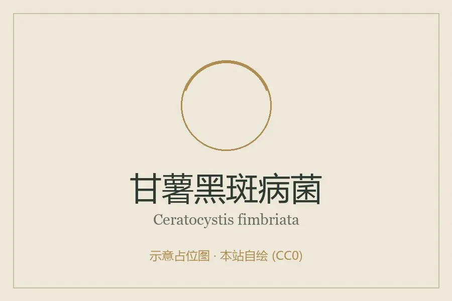

真菌 · 真菌界
甘薯黑斑病菌 Ceratocystis fimbriata

植物病原真菌，菌落灰绿至黑色、带香蕉焦油气味，侵染甘薯块根形成黑斑并产生毒素，人畜误食可中毒。
- 分类
- 门子囊菌门纲粪壳菌纲目微囊菌目科长喙霉科属长喙霉属
- 栖息环境
- 甘薯块根、秧苗与土壤，窖藏期继续蔓延
- 地理分布
- 世界甘薯产区广布，中国南北甘薯产区均有发生
- 保护级别
- 暂无评估；作为重要农业病原广泛存在
物种志
甘薯黑斑病菌的菌落初白色、后转灰绿至黑褐色，生长中等，常散发类似香蕉或焦油的气味。子囊壳长颈瓶状，基部球状、颈部细长，顶端溢出子囊孢子；无性阶段产生内生分生孢子与厚垣孢子。厚垣孢子壁厚，可在土壤中长期存活。
该菌主要侵染甘薯块根、秧苗与茎基部，形成黑褐色凹陷病斑，皮下组织变黑、味苦，并产生甘薯酮等毒素，使病薯对人畜有毒，误食可引起中毒甚至死亡。它随病薯、土壤与种苗传播，窖藏期可继续蔓延。该病在育苗期即可造成烂床。防治以选用无病种薯、温汤浸种、轮作与安全贮藏为主；病薯与病苗必须销毁，不可食用或喂畜。它是甘薯生产中最严重的病害之一。
形态与习性
- 菌落初白后转灰绿至黑褐，有香蕉焦油气味
- 子囊壳长颈瓶状，颈部细长，顶端溢孢子
- 寄主甘薯块根、秧苗与茎基部
- 症状黑褐色凹陷病斑，皮下变黑味苦
- 毒素产生甘薯酮等毒素，人畜误食可中毒
- 防治无病种薯、温汤浸种、轮作、安全贮藏
趣味知识
- 甘薯黑斑病的病薯会发苦、变黑，并产生甘薯酮，人畜吃了可能中毒。
- 病斑处的黑皮下陷，切开后组织呈黑绿色，有类似香蕉或焦油的气味。
- 它能在窖藏中继续传染，一窖好薯常因几块病薯而大量腐烂。
- 病薯、病苗必须深埋或销毁，绝不能削掉黑斑后继续食用或喂牲口。